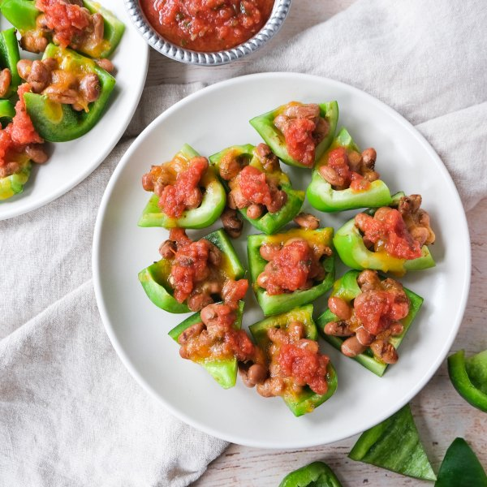

Bell Pepper "Nacho" Bites with Chili Pinto Beans, Cheese & Salsa

Nutrition (per serving)
299.6 kcalCalories
18.1 gProtein
38.8 gCarbs
9.6 gFat
Full nutrition table
| Calories | 299.6 kcal |
| Total fat | 9.6 g |
| Saturated fat | 5 g |
| Trans fat | 0 g |
| Cholesterol | 26.4 mg |
| Sodium | 1189.1 mg |
| Carbohydrates | 38.8 g |
| Fiber | 10.9 g |
| Sugars | 3.2 g |
| Protein | 18.1 g |
| Potassium | 774.3 mg |
| Calcium | 307.6 mg |
| Iron | 2.8 mg |
| Vitamin A | 330.4 IU |
| Vitamin C | 71.9 mg |
| Vitamin D | 0.1 IU |
Cookware
Ingredients
- 3green bell peppers
- 2 (15 oz) canspinto beans
- 1 cupsalsa
- 1 cupshredded cheese, Mexican blend
- chili powder
- oregano, dried
- salt
Steps
- Preheat oven to broil on high and position rack in the upper third of the oven. Line a baking sheet pan with aluminum foil to make clean-up easier (optional).
- Wash, dry, and cut bell peppers lengthwise into quarters; remove and discard the seeds and white membrane. Slice each quarter crosswise into 3-4 pieces to make the "chips."3 green bell peppers
- Arrange bell pepper chips, skin-side down, in a single layer on the baking sheet.
- Drain and rinse beans in a colander. Place in a medium bowl, add spices, and stir to combine.2 (15 oz) cans pinto beans
1 tsp chili powder
½ tsp oregano, dried
½ tsp salt - Divide seasoned beans between bell pepper chips, then top with cheese.1 cup shredded cheese, Mexican blend
- Place baking sheet in the oven and broil until beans are warmed through and cheese is melted, 3-5 minutes. Remove from oven.
- To serve, divide the "nachos" between plates and top with salsa. Enjoy!1 cup salsa